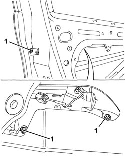
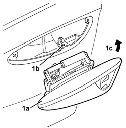

7005C10 FRONT DOOR EXTERIOR HANDLE - R.R WITH DOOR PANEL REMOVED
- Path
- Procedures > 70 FITTINGS > 7005 PASSENGER COMPARTMENT FRONT SIDE DOORS > 7005C FRONT DOOR LOCK CONTROLS > 7005C10 FRONT DOOR EXTERIOR HANDLE - R.R WITH DOOR PANEL REMOVED
- Kind
- repair procedure (removal / refitting; the operation number is the code)
- Applies to
- all engines; all production periods
- Interactive page
- https://sloeber94.github.io/elrnDB/#/939011120
Applies to: all engines; all production periods
 Removing
Removing
 Refitting
RefittingOp. 7005D30 FRONT SIDE DESCENDING WINDOW GLASS SCRAPER (INNER) (ONE), LEFT OR RIGHT - R.R.
Op. 7005D15 FRONT SIDE DOOR DESCENDING WINDOW GLASS (ONE) LEFT OR RIGHT - R.R
Op. 7005C17 FRONT SIDE DOOR LOCK BARREL - R.R.
Op. 7005A08 INTERIOR SUPPORT FRAME FOR ONE SIDE DOOR - R.R. WITH DOOR PANEL REMOVED
1. Undo the handle fixing nuts.

Applies to: all engines; all production periods
1. Lift up the handle (1a) to release the lower retainer from the housing (1b), then extract it by rotating it in the direction shown by the arrow (1c).

Applies to: all engines; all production periods
Refitting
Removing- Check that the exterior handle is not damaged.
- Fit the exterior handle in place, attaching the lower retainer in the housing in the door.
- Tighten the handle retaining nuts.
Op. 7005A08 INTERIOR SUPPORT FRAME FOR ONE SIDE DOOR - R.R. WITH DOOR PANEL REMOVED
Op. 7005C17 FRONT SIDE DOOR LOCK BARREL - R.R.
Op. 7005D15 FRONT SIDE DOOR DESCENDING WINDOW GLASS (ONE) LEFT OR RIGHT - R.R
Op. 7005D30 FRONT SIDE DESCENDING WINDOW GLASS SCRAPER (INNER) (ONE), LEFT OR RIGHT - R.R.
Topics linked from this page (4)
- 7005A08 INTERIOR SUPPORT FRAME FOR ONE SIDE DOOR - R.R. WITH DOOR PANEL REMOVED
- 7005C17 FRONT SIDE DOOR LOCK BARREL - R.R.
- 7005D15 FRONT SIDE DOOR DESCENDING WINDOW GLASS (ONE) LEFT OR RIGHT - R.R
- 7005D30 FRONT SIDE DESCENDING WINDOW GLASS SCRAPER (INNER) (ONE), LEFT OR RIGHT - R.R.